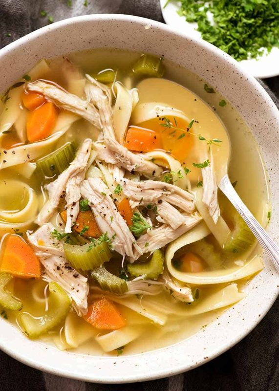

Full redesign: three directions
Each direction is shown on all three screens (home, results, recipe) with your real food photos. Pick one, mix parts ("A's colours with C's rows"), or ask for a new set.
A · Enamelware & kitchen tiles
The kitchen itself. Glossy white enamel with a cobalt rim on everything you can touch; photos served on round enamel plates; the category shelf laid out like white wall tiles with grout lines. Red rim = something's missing, so state reads at a glance. Condensed capitals like an enamel sign.
Borrowed from set-aside directions: state by line, not only colour (missing items get a dotted rule) · steps stamp "done" instead of vanishing.
Risk: can drift retro or cute if the rims get thick and bubbly.

Ready to cook

Missing 1

Missing 2

Missing 2
45 min · 4 servings · Easy
B · Recipe index card box
Grandma's recipe box, made precise. Every recipe is an index card: red header rule, pale blue lines, your ingredients written on the lines and what's missing struck out. Categories are manila divider tabs. Times and counts in a typewriter-style mono. Photos are clipped on like a snapshot.
Risk: familiar and nostalgic; the obvious "recipe" metaphor.
chicken, garlic, soy sauce, rice · 12 cards
✓ Ready to cook
Missing: vinegar
Missing: sugar, mirin
Missing: ginger, papaya
C · Streaming shelf
Browse dishes like shows. Results come as horizontal rows ("Ready to cook", "Need 1 more", "Soups"); big photo tiles, the one you land on grows and shows details while the rest of the row dims. Home uses the same rows for pantry categories. One green accent marks focus and "ready".
Risk: closest to familiar app patterns; photos carry all the character.



2 Bring to a boil, then simmer covered for 30 minutes.
Also set aside (not shown): a dark spectrogram look, a dark developer-console look, a zoo-map look (too childish), an airline-ticket look, and a dictionary-page look (too slow for the kitchen).